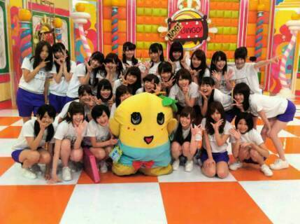

| 2014/03 31 Mon | ひめたん(*>ω<*)そ の427 |
この前リハ終わってから
愛未とあすかりんと
ごはん行ってきたのー
つるとんたん！

うわーすごーいーおっきい(＾ω＾≡＾ω＾)
こんな大きな器に
おうどんが入っててびっくりした！
今度はいくちゃんも
連れてきてあげたいです
いくちゃんー行こうねー♪♪
おうどんが
レフ板をしてくれてる！ステキ！
そして前髪の決まってなさがもう( ´Д` )
 ←うさぎさーん
←うさぎさーん
NOGIBINGO!2
1クールってあっという間なあ(´；；｀)
みなさんいかがだったでしょうか？
夏に放送されたNOGIBINGO! は
AKBさんに追いつこうって番組。
いろんなことに体当たりで挑戦しました(＊^^＊)
そして今回NOGIBINGO!2では
AKBさんを追い越そうってことで
乃木坂らしさを大事にしていただいた気がします
今回はお芝居も楽しかったし
2期生もたくさん活躍したりして
より乃木坂ちゃんのことたくさんの方に
好きになっていただけたんじゃないかなーと
勝手に思っております。
NOGIBINGO!2を通して
さらにひめたんのこと好きになったよーって
みなさんに喜んでもらえたり
ひめたんもちょっとずつだけど
バラエティって楽しいなって
思うようになりました＊
何よりアンダーだからとか関係なく
それぞれの個性を大切にしてくださる
NOGIBINGO!が私は大好きでした。
だから終わっちゃったの
寂しいな(´・ω・｀)
また機会があったらよろしくお願いします！
これは夏のおわり


 ひめたんが答えてくれそうな
ひめたんが答えてくれそうな
面白い質問思いつくまで寝ません!!
おやすみ(-_-)zzz
この一行に何秒間費やしてくれたんだろう。
ちょっと気になりましたよー
英語の勉強しようと思うんだけど
速タンとシスタンとひめたんどれ使おう
ネタわかるかな？？(笑)
ユメタン！！←元ネタ
ひめたんは、単語はもっぱら
ターゲット1900ユーザーです
表紙がわんちゃんのやつ。
質問です！
さて、今なんて質問しようとしたでしょう？
これってあれでしょ？
ひめたんが何言っても
ぶっぶーって返ってくるやつでしょ！
この手のやつ最近多いからね
みなさん頼むよ( ^ω^ )圧力
風の噂を流しているのですが、
ひめたんってつむじが４つあるって本当ですか？
大抵の噂は風に任せてるけど
さすがに4つもないです！
ちなみに誰も聞いてないけど
人のつむじ探すのがひそかに好き
ひめたんの前世はデメキンでしょ？(笑)
これは身内ネタなんだけど
ひめたんの前世はチューリップなの！
かなりんが教えてくれた！
ひめたんは自動車の免許とる予定ありますか？
とったら最初に助手席に誰乗せるー？
※貴様じゃボケェと答えるのが正しい
最後何て言ったか
ちょっと聞こえなかったですけども
とりあえず予定はないです
東京いる間は電車でどこでも行けちゃうし。
姫は２時間半おきに起きちゃうらしいですが、
夜泣きですか？
夜泣き（よなき）は、赤ん坊や幼児が、夜間睡眠中に目を覚まし激しく泣くこと。
中でも特にはっきりした原因がない場合を指すことが一般的である。生後6ヶ月から1歳半くらいに多く見られる。
ねーちょっと？
思わずググッちゃったじゃないのよ
あたし生後17年11ヶ月半(＾ω＾)
ひめたんビームの他にも、
新しいギャグはありますか？
さらーっとギャグ言いよったなー
ひめたんびーむはギャグじゃないです
必・殺・技！
ねーちょっと？
思わずググッちゃったじゃないのよ
あたし生後17年11ヶ月半(＾ω＾)
ひめたんビームの他にも、
新しいギャグはありますか？
さらーっとギャグ言いよったなー
ひめたんびーむはギャグじゃないです
必・殺・技！
ひめたんの日記の
コメント欄下２ケタに46を踏んだ方へ
手書きでコメ返するコーナー
＼ ひめたん46 ／

いつもたくさんのコメント
ありがとうございます
んふーんふふふふんふ( ´ ▽ ` )
姫がお好きですよって方も
甘えんぼひめたんが好きだーって方も
どっちも好きだぞーってのもあったなー
なんだか改めて好きよって言われると
にやにやが止まらないんふふ
まあ言わせたのはひめたんだけどねー
どっちが好き？って聞き方は
ちょっとセコいよねー(笑)
(＊´・ω・＊)
コメント(630)
2014/03/31 23:36